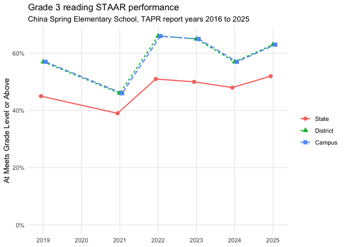
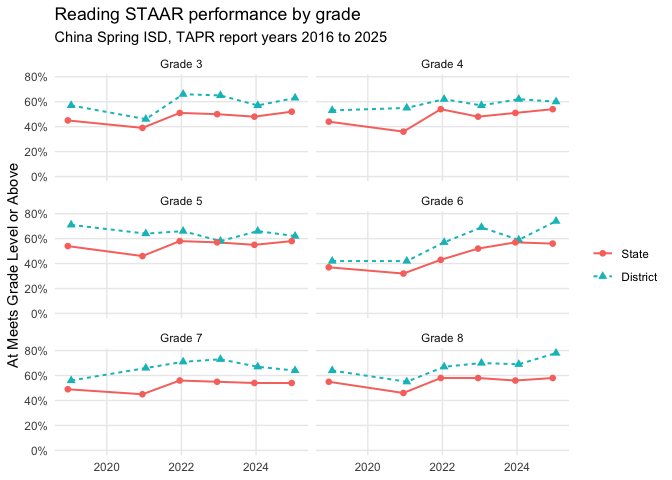
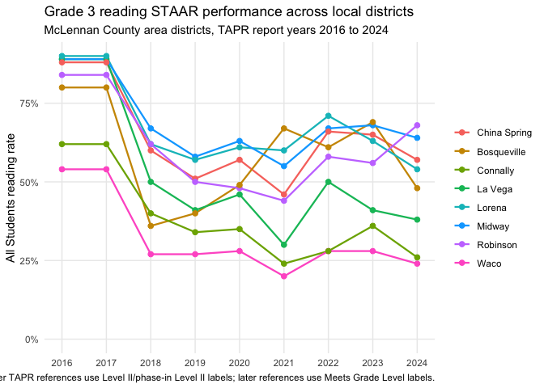
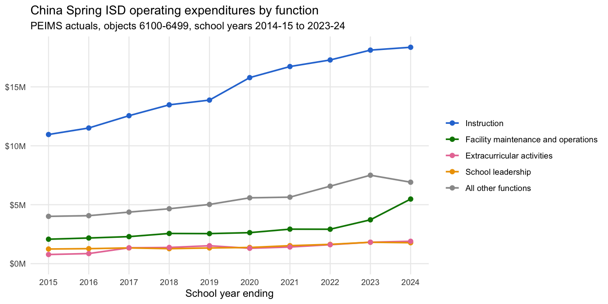
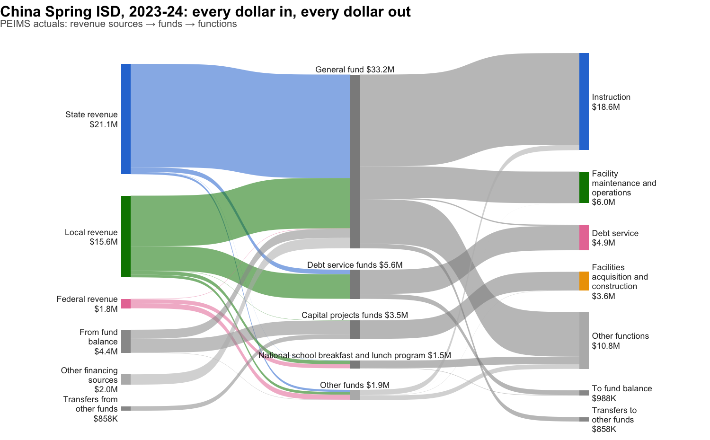

txschools provides reproducible, polite, on-demand access to public school-performance data published by the Texas Education Agency (TEA):
-
TAPR (Texas Academic Performance Reports, 2013-present): per-campus semantic datasets via
txs_get_tapr(), statewide data files viatxs_get_tapr_file(), and the variable dictionary viatxs_get_tapr_dictionary(). -
SRC (School Report Card, 2004-2019): per-campus reports via
txs_get_src()– parsed into tidy data for the 2004-2012 HTML era, cached as PDFs for 2013-2019. (2020+ SRC lives at txschools.gov, which this package does not scrape.) -
AEIS (Academic Excellence Indicator System, 2004-2012): statewide data files via
txs_get_aeis(). -
PEIMS financial data (1999-2000-present): statewide fund/function/object-level district and charter budgets and actuals via
txs_get_peims_finance(), with optional DuckDB output viatxs_write_peims_db(). -
Property tax rates (2005-06-present): district M&O/I&S rates from the Texas Comptroller and TEA workbooks via
txs_get_tax_rates(), with an interactive map explorer (txs_viewer()).
Every table these functions return is documented in a machine-readable data dictionary – column types, ranges, masking semantics, relationships, and a glossary of TEA terms – in the data-dict.yaml format, shipped with the package:
system.file("data-dict.yaml", package = "txschools")vignette("data-dictionaries") renders the full dictionary – every table, column by column, plus relationships and the TEA glossary – generated from that same file.
Disclaimer
txschools is not affiliated with or endorsed by the Texas Education Agency. It downloads files from TEA’s public TAPR/SRC/AEIS pages on demand and does not redistribute TEA data. Users are responsible for compliance with TEA’s site policies and with FERPA and other applicable privacy laws. Masking and suppression values applied by TEA are preserved exactly; this package never imputes or infers masked values.
Installation
# install.packages("pak")
pak::pak("dkahle/txschools")Quick start
# Load the packages used throughout the examples.
library("tidyverse"); library("patchwork"); library("scales", warn.conflicts = FALSE)
theme_set(theme_minimal()); theme_update(panel.grid.minor = element_blank())
library("txschools")Here is a real public TAPR/TPRS example: China Spring Elementary School (161920102) for TEA report year 2025, which corresponds to the 2024-25 TAPR report. The 2025 campus report is currently exposed by TEA as an HTML report page, so this example uses txs_get_tapr() to politely request the public page and parse its student-information datasets.
The geography value is TEA’s organization identifier: for a campus, the nine-digit county-district-campus number (the first six digits identify the district, the last three the campus). Keep these identifiers quoted in R so leading zeros, where present, are preserved.
You don’t need to know the number in advance – look it up by name with txs_find_campus() (or txs_find_district()), which searches a directory built from TEA’s public statewide reference data:
txs_find_campus("china spring")
#> # A tibble: 7 × 9
#> year level id name district district_name county_name region grade_span
#> <int> <chr> <chr> <chr> <chr> <chr> <chr> <chr> <chr>
#> 1 2024 campus 16192… CHIN… 161920 CHINA SPRING… MCLENNAN 12 09 - 12
#> 2 2024 campus 16192… TAG 161920 CHINA SPRING… MCLENNAN 12 10 - 12
#> 3 2024 campus 16192… CHAL… 161920 CHINA SPRING… MCLENNAN 12 07 - 11
#> 4 2024 campus 16192… CHIN… 161920 CHINA SPRING… MCLENNAN 12 07 - 08
#> 5 2024 campus 16192… CHIN… 161920 CHINA SPRING… MCLENNAN 12 02 - 04
#> 6 2024 campus 16192… CHIN… 161920 CHINA SPRING… MCLENNAN 12 05 - 06
#> 7 2024 campus 16192… CHIN… 161920 CHINA SPRING… MCLENNAN 12 EE - 01China Spring Elementary School is campus 102 in China Spring ISD (161920), so its TAPR campus geography is "161920102".
txs_get_tapr() returns a named list of semantic datasets. This reflects the structure of TAPR itself: the report is not one table, but a collection of related tables.
# Request just a few semantic TAPR tables for one campus.
china_spring_elem_2025 <- txs_get_tapr(
year = 2025,
level = "campus",
geography = "161920102",
datasets = c("grade", "sex", "cohorts")
)
# the output of txs_get_tapr() is a tapr object
china_spring_elem_2025
#> <tapr>
#> * grade: 6 rows
#> * sex: 4 rows
#> * cohorts: 26 rows
china_spring_elem_2025 |> str(max.level = 1)
#> List of 3
#> $ grade : tibble [6 × 23] (S3: tbl_df/tbl/data.frame)
#> $ sex : tibble [4 × 23] (S3: tbl_df/tbl/data.frame)
#> $ cohorts: tibble [26 × 23] (S3: tbl_df/tbl/data.frame)
#> - attr(*, "txschools")=List of 8
#> - attr(*, "class")= chr [1:2] "tapr" "list"
china_spring_elem_2025 |> pluck("grade") |> glimpse()
#> Rows: 6
#> Columns: 23
#> $ year <int> 2025, 2025, 2025, 2025, 2025, 2025
#> $ school_year <chr> "2024-25", "2024-25", "2024-25", "2024-25",…
#> $ level <chr> "campus", "campus", "campus", "campus", "ca…
#> $ geography <chr> "161920102", "161920102", "161920102", "161…
#> $ entity_name <chr> "CHINA SPRING EL", "CHINA SPRING EL", "CHIN…
#> $ district_name <chr> "CHINA SPRING ISD", "CHINA SPRING ISD", "CH…
#> $ county_name <chr> "MCLENNAN COUNTY", "MCLENNAN COUNTY", "MCLE…
#> $ source_url <chr> "https://rptsvr1.tea.texas.gov/cgi/sas/brok…
#> $ retrieved_at <chr> "2026-07-07T17:43:54Z", "2026-07-07T17:43:5…
#> $ basis <chr> "membership", "enrollment", "membership", "…
#> $ grade <chr> "Grade 2", "Grade 2", "Grade 3", "Grade 3",…
#> $ count <int> 181, 181, 203, 203, 229, 229
#> $ count_masked <lgl> FALSE, FALSE, FALSE, FALSE, FALSE, FALSE
#> $ count_mask_code <chr> NA, NA, NA, NA, NA, NA
#> $ campus_percent <dbl> 0.295, 0.295, 0.331, 0.331, 0.374, 0.374
#> $ campus_percent_masked <lgl> FALSE, FALSE, FALSE, FALSE, FALSE, FALSE
#> $ campus_percent_mask_code <chr> NA, NA, NA, NA, NA, NA
#> $ district_percent <dbl> 0.060, 0.060, 0.067, 0.067, 0.076, 0.076
#> $ district_percent_masked <lgl> FALSE, FALSE, FALSE, FALSE, FALSE, FALSE
#> $ district_percent_mask_code <chr> NA, NA, NA, NA, NA, NA
#> $ state_percent <dbl> 0.070, 0.070, 0.073, 0.073, 0.073, 0.073
#> $ state_percent_masked <lgl> FALSE, FALSE, FALSE, FALSE, FALSE, FALSE
#> $ state_percent_mask_code <chr> NA, NA, NA, NA, NA, NA
china_spring_elem_2025 |> pluck("sex") |> glimpse()
#> Rows: 4
#> Columns: 23
#> $ year <int> 2025, 2025, 2025, 2025
#> $ school_year <chr> "2024-25", "2024-25", "2024-25", "2024-25"
#> $ level <chr> "campus", "campus", "campus", "campus"
#> $ geography <chr> "161920102", "161920102", "161920102", "161…
#> $ entity_name <chr> "CHINA SPRING EL", "CHINA SPRING EL", "CHIN…
#> $ district_name <chr> "CHINA SPRING ISD", "CHINA SPRING ISD", "CH…
#> $ county_name <chr> "MCLENNAN COUNTY", "MCLENNAN COUNTY", "MCLE…
#> $ source_url <chr> "https://rptsvr1.tea.texas.gov/cgi/sas/brok…
#> $ retrieved_at <chr> "2026-07-07T17:43:54Z", "2026-07-07T17:43:5…
#> $ basis <chr> "membership", "enrollment", "membership", "…
#> $ sex <chr> "Female", "Female", "Male", "Male"
#> $ count <int> 304, 304, 309, 309
#> $ count_masked <lgl> FALSE, FALSE, FALSE, FALSE
#> $ count_mask_code <chr> NA, NA, NA, NA
#> $ campus_percent <dbl> 0.496, 0.496, 0.504, 0.504
#> $ campus_percent_masked <lgl> FALSE, FALSE, FALSE, FALSE
#> $ campus_percent_mask_code <chr> NA, NA, NA, NA
#> $ district_percent <dbl> 0.484, 0.484, 0.516, 0.516
#> $ district_percent_masked <lgl> FALSE, FALSE, FALSE, FALSE
#> $ district_percent_mask_code <chr> NA, NA, NA, NA
#> $ state_percent <dbl> 0.489, 0.488, 0.511, 0.512
#> $ state_percent_masked <lgl> FALSE, FALSE, FALSE, FALSE
#> $ state_percent_mask_code <chr> NA, NA, NA, NA
china_spring_elem_2025 |> pluck("cohorts") |> glimpse()
#> Rows: 26
#> Columns: 23
#> $ year <int> 2025, 2025, 2025, 2025, 2025, 2025, 2025, 2…
#> $ school_year <chr> "2024-25", "2024-25", "2024-25", "2024-25",…
#> $ level <chr> "campus", "campus", "campus", "campus", "ca…
#> $ geography <chr> "161920102", "161920102", "161920102", "161…
#> $ entity_name <chr> "CHINA SPRING EL", "CHINA SPRING EL", "CHIN…
#> $ district_name <chr> "CHINA SPRING ISD", "CHINA SPRING ISD", "CH…
#> $ county_name <chr> "MCLENNAN COUNTY", "MCLENNAN COUNTY", "MCLE…
#> $ source_url <chr> "https://rptsvr1.tea.texas.gov/cgi/sas/brok…
#> $ retrieved_at <chr> "2026-07-07T17:43:54Z", "2026-07-07T17:43:5…
#> $ basis <chr> "membership", "enrollment", "membership", "…
#> $ cohort <chr> "Economically Disadvantaged", "Economically…
#> $ count <int> 229, 229, 384, 384, 41, 41, 22, 22, 0, NA, …
#> $ count_masked <lgl> FALSE, FALSE, FALSE, FALSE, FALSE, FALSE, F…
#> $ count_mask_code <chr> NA, NA, NA, NA, NA, NA, NA, NA, NA, NA, NA,…
#> $ campus_percent <dbl> 0.374, 0.374, 0.626, 0.626, 0.067, 0.067, 0…
#> $ campus_percent_masked <lgl> FALSE, FALSE, FALSE, FALSE, FALSE, FALSE, F…
#> $ campus_percent_mask_code <chr> NA, NA, NA, NA, NA, NA, NA, NA, NA, NA, NA,…
#> $ district_percent <dbl> 0.338, 0.338, 0.662, 0.662, 0.151, 0.151, 0…
#> $ district_percent_masked <lgl> FALSE, FALSE, FALSE, FALSE, FALSE, FALSE, F…
#> $ district_percent_mask_code <chr> NA, NA, NA, NA, NA, NA, NA, NA, NA, NA, NA,…
#> $ state_percent <dbl> 0.605, 0.604, 0.395, 0.396, 0.068, 0.068, 0…
#> $ state_percent_masked <lgl> FALSE, FALSE, FALSE, FALSE, FALSE, FALSE, F…
#> $ state_percent_mask_code <chr> NA, NA, NA, NA, NA, NA, NA, NA, NA, NA, NA,…If datasets is unspecified, txs_get_tapr() grabs all the information it can. txs_list_tapr_datasets() can be used to see the currently supported semantic dataset keys.
txs_list_tapr_datasets()
#> # A tibble: 18 × 5
#> key label page_source grain columns
#> <chr> <chr> <chr> <chr> <chr>
#> 1 grade Student enrollment by grade student camp… year, …
#> 2 ethnic Student ethnic distribution student camp… year, …
#> 3 sex Student sex distribution student camp… year, …
#> 4 cohorts Other student cohorts student camp… year, …
#> 5 program Students by instructional program student camp… year, …
#> 6 disability Students with disabilities by pr… student camp… year, …
#> 7 mobility Student mobility student camp… year, …
#> 8 attrition Student attrition student camp… year, …
#> 9 retention Student retention student camp… year, …
#> 10 class_size Average class size student camp… year, …
#> 11 staar_performance STAAR performance staar_perf… camp… year, …
#> 12 staar_progress STAAR progress staar_prog… camp… year, …
#> 13 bilingual_esl Bilingual education and English … bilingual_… camp… year, …
#> 14 ccmr College, career, and military re… ccmr camp… year, …
#> 15 graduation Graduation graduation camp… year, …
#> 16 attendance Attendance graduation camp… year, …
#> 17 staff Staff information staff camp… year, …
#> 18 finance Finance finance camp… year, …So a typical basic useage for txs_get_tapr() for one year would be:
(china_spring_elem_2025 <- txs_get_tapr(year = 2025, level = "campus", geography = "161920102"))
#> Warning: ! TAPR finance page unavailable for 161920102 (2025); datasets "finance"
#> returned empty.
#> ℹ Reason: TEA's SAS broker returned an error page (no report output).
#> <tapr>
#> * grade: 6 rows
#> * ethnic: 14 rows
#> * sex: 4 rows
#> * cohorts: 26 rows
#> * program: 10 rows
#> * disability: 12 rows
#> * mobility: 26 rows
#> * attrition: 4 rows
#> * retention: 0 rows
#> * class_size: 0 rows
#> * staar_performance: 1131 rows
#> * staar_progress: 1162 rows
#> * bilingual_esl: 765 rows
#> * ccmr: 7 rows
#> * graduation: 920 rows
#> * attendance: 52 rows
#> * staff: 102 rows
#> * finance: 0 rows
china_spring_elem_2025 |> pluck("graduation") |> glimpse()
#> Rows: 920
#> Columns: 19
#> $ year <int> 2025, 2025, 2025, 2025, 2025, 2025, 2025, 2025, 2025, 20…
#> $ school_year <chr> "2024-25", "2024-25", "2024-25", "2024-25", "2024-25", "…
#> $ level <chr> "campus", "campus", "campus", "campus", "campus", "campu…
#> $ geography <chr> "161920102", "161920102", "161920102", "161920102", "161…
#> $ entity_name <chr> "CHINA SPRING EL", "CHINA SPRING EL", "CHINA SPRING EL",…
#> $ district_name <chr> "CHINA SPRING ISD", "CHINA SPRING ISD", "CHINA SPRING IS…
#> $ county_name <chr> "MCLENNAN COUNTY", "MCLENNAN COUNTY", "MCLENNAN COUNTY",…
#> $ source_url <chr> "https://rptsvr1.tea.texas.gov/cgi/sas/broker?_debug=0&_…
#> $ retrieved_at <chr> "2026-07-07T17:44:03Z", "2026-07-07T17:44:03Z", "2026-07…
#> $ page_source <chr> "graduation", "graduation", "graduation", "graduation", …
#> $ table_index <int> 2, 2, 2, 2, 2, 2, 2, 3, 3, 3, 3, 3, 3, 3, 3, 3, 3, 3, 3,…
#> $ row_index <int> 1, 1, 1, 1, 1, 1, 1, 2, 2, 2, 2, 2, 2, 2, 2, 2, 2, 2, 2,…
#> $ section <chr> NA, NA, NA, NA, NA, NA, NA, "Attendance Rate", "Attendan…
#> $ row_label <chr> "2018-19", "2018-19", "2018-19", "2018-19", "2018-19", "…
#> $ column <chr> "X2", "X3", "X4", "X5", "X6", "X7", "X8", "State", "Dist…
#> $ value <chr> "2019-20", "2020-21", "2021-22", "2022-23", "2023-24", "…
#> $ value_num <dbl> NA, NA, NA, NA, NA, NA, NA, 93.9, 95.8, 96.3, 97.4, 96.0…
#> $ masked <lgl> FALSE, FALSE, FALSE, FALSE, FALSE, FALSE, FALSE, FALSE, …
#> $ mask_code <chr> NA, NA, NA, NA, NA, NA, NA, NA, NA, NA, NA, NA, NA, "*",…
china_spring_elem_2025 |> pluck("staar_performance") |> glimpse()
#> Rows: 1,131
#> Columns: 19
#> $ year <int> 2025, 2025, 2025, 2025, 2025, 2025, 2025, 2025, 2025, 20…
#> $ school_year <chr> "2024-25", "2024-25", "2024-25", "2024-25", "2024-25", "…
#> $ level <chr> "campus", "campus", "campus", "campus", "campus", "campu…
#> $ geography <chr> "161920102", "161920102", "161920102", "161920102", "161…
#> $ entity_name <chr> "CHINA SPRING EL", "CHINA SPRING EL", "CHINA SPRING EL",…
#> $ district_name <chr> "CHINA SPRING ISD", "CHINA SPRING ISD", "CHINA SPRING IS…
#> $ county_name <chr> "MCLENNAN COUNTY", "MCLENNAN COUNTY", "MCLENNAN COUNTY",…
#> $ source_url <chr> "https://rptsvr1.tea.texas.gov/cgi/sas/broker?_debug=0&_…
#> $ retrieved_at <chr> "2026-07-07T17:43:55Z", "2026-07-07T17:43:55Z", "2026-07…
#> $ page_source <chr> "staar_performance", "staar_performance", "staar_perform…
#> $ table_index <int> 2, 2, 2, 2, 2, 2, 2, 3, 3, 3, 3, 3, 3, 3, 3, 3, 3, 3, 3,…
#> $ row_index <int> 1, 1, 1, 1, 1, 1, 1, 3, 3, 3, 3, 3, 3, 3, 3, 3, 3, 3, 3,…
#> $ section <chr> NA, NA, NA, NA, NA, NA, NA, "Grade 3 Reading", "Grade 3 …
#> $ row_label <chr> "2018-19", "2018-19", "2018-19", "2018-19", "2018-19", "…
#> $ column <chr> "X2", "X3", "X4", "X5", "X6", "X7", "X8", "SchoolYear", …
#> $ value <chr> "2019-20", "2020-21", "2021-22", "2022-23", "2023-24", "…
#> $ value_num <dbl> NA, NA, NA, NA, NA, NA, NA, 2025, 77, 89, 89, 85, 78, 94…
#> $ masked <lgl> FALSE, FALSE, FALSE, FALSE, FALSE, FALSE, FALSE, FALSE, …
#> $ mask_code <chr> NA, NA, NA, NA, NA, NA, NA, NA, NA, NA, NA, NA, NA, NA, …
china_spring_elem_2025 |> pluck("staar_performance") |> head()
#> # A tibble: 6 × 19
#> year school_year level geography entity_name district_name county_name
#> <int> <chr> <chr> <chr> <chr> <chr> <chr>
#> 1 2025 2024-25 campus 161920102 CHINA SPRING EL CHINA SPRING I… MCLENNAN C…
#> 2 2025 2024-25 campus 161920102 CHINA SPRING EL CHINA SPRING I… MCLENNAN C…
#> 3 2025 2024-25 campus 161920102 CHINA SPRING EL CHINA SPRING I… MCLENNAN C…
#> 4 2025 2024-25 campus 161920102 CHINA SPRING EL CHINA SPRING I… MCLENNAN C…
#> 5 2025 2024-25 campus 161920102 CHINA SPRING EL CHINA SPRING I… MCLENNAN C…
#> 6 2025 2024-25 campus 161920102 CHINA SPRING EL CHINA SPRING I… MCLENNAN C…
#> # ℹ 12 more variables: source_url <chr>, retrieved_at <chr>, page_source <chr>,
#> # table_index <int>, row_index <int>, section <chr>, row_label <chr>,
#> # column <chr>, value <chr>, value_num <dbl>, masked <lgl>, mask_code <chr>
china_spring_elem_2025 |> pluck("staff") |> print(n = Inf)
#> # A tibble: 102 × 19
#> year school_year level geography entity_name district_name county_name
#> <int> <chr> <chr> <chr> <chr> <chr> <chr>
#> 1 2025 2024-25 campus 161920102 CHINA SPRING EL CHINA SPRING… MCLENNAN C…
#> 2 2025 2024-25 campus 161920102 CHINA SPRING EL CHINA SPRING… MCLENNAN C…
#> 3 2025 2024-25 campus 161920102 CHINA SPRING EL CHINA SPRING… MCLENNAN C…
#> 4 2025 2024-25 campus 161920102 CHINA SPRING EL CHINA SPRING… MCLENNAN C…
#> 5 2025 2024-25 campus 161920102 CHINA SPRING EL CHINA SPRING… MCLENNAN C…
#> 6 2025 2024-25 campus 161920102 CHINA SPRING EL CHINA SPRING… MCLENNAN C…
#> 7 2025 2024-25 campus 161920102 CHINA SPRING EL CHINA SPRING… MCLENNAN C…
#> 8 2025 2024-25 campus 161920102 CHINA SPRING EL CHINA SPRING… MCLENNAN C…
#> 9 2025 2024-25 campus 161920102 CHINA SPRING EL CHINA SPRING… MCLENNAN C…
#> 10 2025 2024-25 campus 161920102 CHINA SPRING EL CHINA SPRING… MCLENNAN C…
#> 11 2025 2024-25 campus 161920102 CHINA SPRING EL CHINA SPRING… MCLENNAN C…
#> 12 2025 2024-25 campus 161920102 CHINA SPRING EL CHINA SPRING… MCLENNAN C…
#> 13 2025 2024-25 campus 161920102 CHINA SPRING EL CHINA SPRING… MCLENNAN C…
#> 14 2025 2024-25 campus 161920102 CHINA SPRING EL CHINA SPRING… MCLENNAN C…
#> 15 2025 2024-25 campus 161920102 CHINA SPRING EL CHINA SPRING… MCLENNAN C…
#> 16 2025 2024-25 campus 161920102 CHINA SPRING EL CHINA SPRING… MCLENNAN C…
#> 17 2025 2024-25 campus 161920102 CHINA SPRING EL CHINA SPRING… MCLENNAN C…
#> 18 2025 2024-25 campus 161920102 CHINA SPRING EL CHINA SPRING… MCLENNAN C…
#> 19 2025 2024-25 campus 161920102 CHINA SPRING EL CHINA SPRING… MCLENNAN C…
#> 20 2025 2024-25 campus 161920102 CHINA SPRING EL CHINA SPRING… MCLENNAN C…
#> 21 2025 2024-25 campus 161920102 CHINA SPRING EL CHINA SPRING… MCLENNAN C…
#> 22 2025 2024-25 campus 161920102 CHINA SPRING EL CHINA SPRING… MCLENNAN C…
#> 23 2025 2024-25 campus 161920102 CHINA SPRING EL CHINA SPRING… MCLENNAN C…
#> 24 2025 2024-25 campus 161920102 CHINA SPRING EL CHINA SPRING… MCLENNAN C…
#> 25 2025 2024-25 campus 161920102 CHINA SPRING EL CHINA SPRING… MCLENNAN C…
#> 26 2025 2024-25 campus 161920102 CHINA SPRING EL CHINA SPRING… MCLENNAN C…
#> 27 2025 2024-25 campus 161920102 CHINA SPRING EL CHINA SPRING… MCLENNAN C…
#> 28 2025 2024-25 campus 161920102 CHINA SPRING EL CHINA SPRING… MCLENNAN C…
#> 29 2025 2024-25 campus 161920102 CHINA SPRING EL CHINA SPRING… MCLENNAN C…
#> 30 2025 2024-25 campus 161920102 CHINA SPRING EL CHINA SPRING… MCLENNAN C…
#> 31 2025 2024-25 campus 161920102 CHINA SPRING EL CHINA SPRING… MCLENNAN C…
#> 32 2025 2024-25 campus 161920102 CHINA SPRING EL CHINA SPRING… MCLENNAN C…
#> 33 2025 2024-25 campus 161920102 CHINA SPRING EL CHINA SPRING… MCLENNAN C…
#> 34 2025 2024-25 campus 161920102 CHINA SPRING EL CHINA SPRING… MCLENNAN C…
#> 35 2025 2024-25 campus 161920102 CHINA SPRING EL CHINA SPRING… MCLENNAN C…
#> 36 2025 2024-25 campus 161920102 CHINA SPRING EL CHINA SPRING… MCLENNAN C…
#> 37 2025 2024-25 campus 161920102 CHINA SPRING EL CHINA SPRING… MCLENNAN C…
#> 38 2025 2024-25 campus 161920102 CHINA SPRING EL CHINA SPRING… MCLENNAN C…
#> 39 2025 2024-25 campus 161920102 CHINA SPRING EL CHINA SPRING… MCLENNAN C…
#> 40 2025 2024-25 campus 161920102 CHINA SPRING EL CHINA SPRING… MCLENNAN C…
#> 41 2025 2024-25 campus 161920102 CHINA SPRING EL CHINA SPRING… MCLENNAN C…
#> 42 2025 2024-25 campus 161920102 CHINA SPRING EL CHINA SPRING… MCLENNAN C…
#> 43 2025 2024-25 campus 161920102 CHINA SPRING EL CHINA SPRING… MCLENNAN C…
#> 44 2025 2024-25 campus 161920102 CHINA SPRING EL CHINA SPRING… MCLENNAN C…
#> 45 2025 2024-25 campus 161920102 CHINA SPRING EL CHINA SPRING… MCLENNAN C…
#> 46 2025 2024-25 campus 161920102 CHINA SPRING EL CHINA SPRING… MCLENNAN C…
#> 47 2025 2024-25 campus 161920102 CHINA SPRING EL CHINA SPRING… MCLENNAN C…
#> 48 2025 2024-25 campus 161920102 CHINA SPRING EL CHINA SPRING… MCLENNAN C…
#> 49 2025 2024-25 campus 161920102 CHINA SPRING EL CHINA SPRING… MCLENNAN C…
#> 50 2025 2024-25 campus 161920102 CHINA SPRING EL CHINA SPRING… MCLENNAN C…
#> 51 2025 2024-25 campus 161920102 CHINA SPRING EL CHINA SPRING… MCLENNAN C…
#> 52 2025 2024-25 campus 161920102 CHINA SPRING EL CHINA SPRING… MCLENNAN C…
#> 53 2025 2024-25 campus 161920102 CHINA SPRING EL CHINA SPRING… MCLENNAN C…
#> 54 2025 2024-25 campus 161920102 CHINA SPRING EL CHINA SPRING… MCLENNAN C…
#> 55 2025 2024-25 campus 161920102 CHINA SPRING EL CHINA SPRING… MCLENNAN C…
#> 56 2025 2024-25 campus 161920102 CHINA SPRING EL CHINA SPRING… MCLENNAN C…
#> 57 2025 2024-25 campus 161920102 CHINA SPRING EL CHINA SPRING… MCLENNAN C…
#> 58 2025 2024-25 campus 161920102 CHINA SPRING EL CHINA SPRING… MCLENNAN C…
#> 59 2025 2024-25 campus 161920102 CHINA SPRING EL CHINA SPRING… MCLENNAN C…
#> 60 2025 2024-25 campus 161920102 CHINA SPRING EL CHINA SPRING… MCLENNAN C…
#> 61 2025 2024-25 campus 161920102 CHINA SPRING EL CHINA SPRING… MCLENNAN C…
#> 62 2025 2024-25 campus 161920102 CHINA SPRING EL CHINA SPRING… MCLENNAN C…
#> 63 2025 2024-25 campus 161920102 CHINA SPRING EL CHINA SPRING… MCLENNAN C…
#> 64 2025 2024-25 campus 161920102 CHINA SPRING EL CHINA SPRING… MCLENNAN C…
#> 65 2025 2024-25 campus 161920102 CHINA SPRING EL CHINA SPRING… MCLENNAN C…
#> 66 2025 2024-25 campus 161920102 CHINA SPRING EL CHINA SPRING… MCLENNAN C…
#> 67 2025 2024-25 campus 161920102 CHINA SPRING EL CHINA SPRING… MCLENNAN C…
#> 68 2025 2024-25 campus 161920102 CHINA SPRING EL CHINA SPRING… MCLENNAN C…
#> 69 2025 2024-25 campus 161920102 CHINA SPRING EL CHINA SPRING… MCLENNAN C…
#> 70 2025 2024-25 campus 161920102 CHINA SPRING EL CHINA SPRING… MCLENNAN C…
#> 71 2025 2024-25 campus 161920102 CHINA SPRING EL CHINA SPRING… MCLENNAN C…
#> 72 2025 2024-25 campus 161920102 CHINA SPRING EL CHINA SPRING… MCLENNAN C…
#> 73 2025 2024-25 campus 161920102 CHINA SPRING EL CHINA SPRING… MCLENNAN C…
#> 74 2025 2024-25 campus 161920102 CHINA SPRING EL CHINA SPRING… MCLENNAN C…
#> 75 2025 2024-25 campus 161920102 CHINA SPRING EL CHINA SPRING… MCLENNAN C…
#> 76 2025 2024-25 campus 161920102 CHINA SPRING EL CHINA SPRING… MCLENNAN C…
#> 77 2025 2024-25 campus 161920102 CHINA SPRING EL CHINA SPRING… MCLENNAN C…
#> 78 2025 2024-25 campus 161920102 CHINA SPRING EL CHINA SPRING… MCLENNAN C…
#> 79 2025 2024-25 campus 161920102 CHINA SPRING EL CHINA SPRING… MCLENNAN C…
#> 80 2025 2024-25 campus 161920102 CHINA SPRING EL CHINA SPRING… MCLENNAN C…
#> 81 2025 2024-25 campus 161920102 CHINA SPRING EL CHINA SPRING… MCLENNAN C…
#> 82 2025 2024-25 campus 161920102 CHINA SPRING EL CHINA SPRING… MCLENNAN C…
#> 83 2025 2024-25 campus 161920102 CHINA SPRING EL CHINA SPRING… MCLENNAN C…
#> 84 2025 2024-25 campus 161920102 CHINA SPRING EL CHINA SPRING… MCLENNAN C…
#> 85 2025 2024-25 campus 161920102 CHINA SPRING EL CHINA SPRING… MCLENNAN C…
#> 86 2025 2024-25 campus 161920102 CHINA SPRING EL CHINA SPRING… MCLENNAN C…
#> 87 2025 2024-25 campus 161920102 CHINA SPRING EL CHINA SPRING… MCLENNAN C…
#> 88 2025 2024-25 campus 161920102 CHINA SPRING EL CHINA SPRING… MCLENNAN C…
#> 89 2025 2024-25 campus 161920102 CHINA SPRING EL CHINA SPRING… MCLENNAN C…
#> 90 2025 2024-25 campus 161920102 CHINA SPRING EL CHINA SPRING… MCLENNAN C…
#> 91 2025 2024-25 campus 161920102 CHINA SPRING EL CHINA SPRING… MCLENNAN C…
#> 92 2025 2024-25 campus 161920102 CHINA SPRING EL CHINA SPRING… MCLENNAN C…
#> 93 2025 2024-25 campus 161920102 CHINA SPRING EL CHINA SPRING… MCLENNAN C…
#> 94 2025 2024-25 campus 161920102 CHINA SPRING EL CHINA SPRING… MCLENNAN C…
#> 95 2025 2024-25 campus 161920102 CHINA SPRING EL CHINA SPRING… MCLENNAN C…
#> 96 2025 2024-25 campus 161920102 CHINA SPRING EL CHINA SPRING… MCLENNAN C…
#> 97 2025 2024-25 campus 161920102 CHINA SPRING EL CHINA SPRING… MCLENNAN C…
#> 98 2025 2024-25 campus 161920102 CHINA SPRING EL CHINA SPRING… MCLENNAN C…
#> 99 2025 2024-25 campus 161920102 CHINA SPRING EL CHINA SPRING… MCLENNAN C…
#> 100 2025 2024-25 campus 161920102 CHINA SPRING EL CHINA SPRING… MCLENNAN C…
#> 101 2025 2024-25 campus 161920102 CHINA SPRING EL CHINA SPRING… MCLENNAN C…
#> 102 2025 2024-25 campus 161920102 CHINA SPRING EL CHINA SPRING… MCLENNAN C…
#> # ℹ 12 more variables: source_url <chr>, retrieved_at <chr>, page_source <chr>,
#> # table_index <int>, row_index <int>, section <chr>, row_label <chr>,
#> # column <chr>, value <chr>, value_num <dbl>, masked <lgl>, mask_code <chr>Here is a small longitudinal visualization using the same campus. This pulls the semantic STAAR performance table for 10 report years, keeps one Grade 3 reading measure, and compares the campus to its district and the state. TEA’s report tables nest measures under section headings (“Grade 3 Reading” > “At Meets Grade Level or Above”), which the parsed data exposes as section and row_label; each page also repeats the prior year’s row, so we keep the row whose SchoolYear matches the report year. The series use both color and line type because the campus and district can land on the same values; in this case, China Spring Elementary is the only district campus serving Grade 3, so the campus and district series are expected to overlap.
staar_years <- 2016:2025
# Pull the semantic STAAR table once for all requested years.
china_spring_elem_staar <- txs_get_tapr(
year = staar_years,
level = "campus",
geography = "161920102",
datasets = "staar_performance"
)
# Keep the current-year Grade 3 reading row and reshape comparisons long.
staar_grade3_reading <- china_spring_elem_staar$staar_performance |>
filter(
section == "Grade 3 Reading",
row_label == "At Meets Grade Level or Above",
column %in% c("SchoolYear", "Campus", "District", "State")
) |>
select(year, table_index, row_index, column, value_num) |>
pivot_wider(names_from = column, values_from = value_num) |>
filter(SchoolYear == year) |>
select(year, Campus, District, State) |>
pivot_longer(-year, names_to = "comparison", values_to = "rate") |>
mutate(
comparison = factor(comparison, levels = c("State", "District", "Campus")),
rate = rate / 100
) |>
drop_na(rate) |>
arrange(comparison, year)
# Offset overlapping campus/district points without changing the values.
overlap_offset <- position_dodge(width = 0.18)
ggplot(
staar_grade3_reading,
aes(
x = year,
y = rate,
color = comparison,
linetype = comparison,
shape = comparison,
group = comparison
)
) +
geom_line(linewidth = 0.8, position = overlap_offset) +
geom_point(size = 2.5, position = overlap_offset) +
scale_x_continuous(breaks = staar_years) +
scale_y_continuous(labels = percent, limits = c(0, NA)) +
labs(
x = NULL,
y = "At Meets Grade Level or Above",
color = NULL,
linetype = NULL,
shape = NULL,
title = "Grade 3 reading STAAR performance",
subtitle = paste(
"China Spring Elementary School, TAPR report years",
min(staar_years), "to", max(staar_years)
)
)
For the district as a whole, use the district-level TAPR report and facet the same reading measure by grade. This drops the campus line because the unit of analysis is China Spring ISD rather than one campus.
# Switch from the campus report to the district report.
china_spring_district_staar <- txs_get_tapr(
year = staar_years,
level = "district",
geography = "161920",
datasets = "staar_performance"
)
# Keep the same reading measure, now across every grade reported by the district.
district_staar_reading_by_grade <- china_spring_district_staar$staar_performance |>
filter(
str_detect(section, regex("^Grade \\d+ Reading", ignore_case = TRUE)),
row_label == "At Meets Grade Level or Above",
column %in% c("SchoolYear", "District", "State")
) |>
mutate(grade = str_extract(section, "^Grade \\d+")) |>
select(year, grade, table_index, row_index, column, value_num) |>
pivot_wider(names_from = column, values_from = value_num) |>
filter(SchoolYear == year) |>
select(year, grade, District, State) |>
pivot_longer(c(District, State), names_to = "comparison", values_to = "rate") |>
mutate(
comparison = factor(comparison, levels = c("State", "District")),
rate = rate / 100
) |>
drop_na(rate)
# Order facets by numeric grade rather than alphabetically.
grade_levels <- district_staar_reading_by_grade |>
distinct(grade) |>
mutate(grade_num = parse_number(grade)) |>
arrange(grade_num) |>
pull(grade)
district_staar_reading_by_grade <- district_staar_reading_by_grade |>
mutate(grade = factor(grade, levels = grade_levels))
district_offset <- position_dodge(width = 0.18)
ggplot(
district_staar_reading_by_grade,
aes(
x = year,
y = rate,
color = comparison,
linetype = comparison,
shape = comparison,
group = comparison
)
) +
geom_line(linewidth = 0.7, position = district_offset) +
geom_point(size = 2, position = district_offset) +
facet_wrap(vars(grade), ncol = 2) +
scale_x_continuous(breaks = seq(min(staar_years), max(staar_years), by = 2)) +
scale_y_continuous(labels = percent, limits = c(0, NA)) +
labs(
x = NULL,
y = "At Meets Grade Level or Above",
color = NULL,
linetype = NULL,
shape = NULL,
title = "Reading STAAR performance by grade",
subtitle = paste(
"China Spring ISD, TAPR report years",
min(staar_years), "to", max(staar_years)
)
)
The semantic HTML report is convenient for one school or district, but it is not the fastest tool once you compare many districts: it has to request each report page separately. For a local comparison, use TEA’s statewide Advanced Download files instead. The code below downloads one district-level STAAR file per year, uses the TAPR dictionary to find the Grade 3 reading variable, then filters locally to nearby McLennan County districts. The dictionary lookup is the intentionally explicit part here; this is the piece a future helper can make friendlier. This example stops at 2024 because the package can discover the 2025 Advanced Download data file, but not yet the corresponding district dictionary reference.
local_staar_years <- 2016:2024
# Compare China Spring with nearby McLennan County districts.
local_district_names <- c(
"China Spring ISD", "Midway ISD", "Waco ISD", "Lorena ISD",
"Robinson ISD", "Connally ISD", "La Vega ISD", "Bosqueville ISD"
) |>
str_to_upper()
local_districts <- txs_directory(2024, level = "district") |>
mutate(name_key = str_to_upper(name)) |>
filter(county_name == "MCLENNAN", name_key %in% local_district_names) |>
mutate(
district = str_remove(name, " ISD$") |>
str_to_title() |>
fct_relevel("China Spring")
) |>
arrange(district)
# Find the year-specific Grade 3 reading rate variable in each dictionary.
grade3_reading_vars <- map_dfr(local_staar_years, \(yr) {
txs_get_tapr_dictionary(yr, "district") |>
mutate(label_key = str_squish(str_to_lower(label))) |>
filter(
str_detect(label_key, "grade\\s*3"),
str_detect(label_key, "read"),
str_detect(label_key, "all students"),
str_detect(label_key, "rate"),
str_detect(label_key, "meets|level ii")
) |>
slice_head(n = 1) |>
transmute(year = yr, variable, variable_label = label)
})
# Download one statewide file per year, then filter locally.
local_grade3_reading <- map_dfr(local_staar_years, \(yr) {
rate_var <- grade3_reading_vars |>
filter(year == yr) |>
pull(variable)
if (length(rate_var) != 1L) {
stop("Could not identify the Grade 3 reading STAAR variable for ", yr, ".")
}
txs_get_tapr_file(
year = yr,
level = "district",
dataset = "STAAR1",
output = "raw",
verbose = FALSE
) |>
transmute(
year = yr,
geography = str_remove(str_trim(DISTRICT), "^'"),
value = .data[[rate_var]]
)
}) |>
filter(geography %in% local_districts$id) |>
mutate(
value_num = suppressWarnings(parse_number(value)),
rate = if_else(value_num > 1, value_num / 100, value_num)
) |>
left_join(
local_districts |> select(geography = id, district),
by = "geography"
) |>
drop_na(rate)
ggplot(
local_grade3_reading,
aes(x = year, y = rate, color = district, group = district)
) +
geom_line(linewidth = 0.8) +
geom_point(size = 2) +
scale_x_continuous(breaks = local_staar_years) +
scale_y_continuous(labels = percent, limits = c(0, NA)) +
labs(
x = NULL,
y = "All Students reading rate",
color = NULL,
title = "Grade 3 reading STAAR performance across local districts",
subtitle = paste(
"McLennan County area districts, TAPR report years",
min(local_staar_years), "to", max(local_staar_years)
),
caption = paste(
"Older TAPR references use Level II/phase-in Level II labels;",
"later references use Meets Grade Level labels."
)
)
Statewide data files
TEA publishes the statewide TAPR data through its “Advanced Download” interface as one file per level and dataset code ("REF" for reference information, "STAAR1" for STAAR performance, "GRAD" for graduation, …). txs_get_tapr_file() downloads one of these files; use txs_list_downloads() to see the codes TEA publishes for a year, and txs_get_tapr_dictionary() for the variable-code dictionary.
# Every Texas campus's reference row, one call:
ref_2024 <- txs_get_tapr_file(2024, "campus", dataset = "REF", output = "raw")
# What do those variable codes mean?
dict_2024 <- txs_get_tapr_dictionary(2024, "campus")School Report Cards and AEIS
txs_get_src() pulls one campus’s School Report Card: parsed into a tidy masking-aware tibble for 2004-2012 (TEA’s HTML era), downloaded and cached as the official PDF for 2013-2019.
src_2011 <- txs_get_src(2011, "campus", "161920102")txs_get_aeis() pulls statewide AEIS data files (2004-2012) by level and dataset code:
aeis_2011 <- txs_get_aeis(2011, "district", dataset = "ref",
geography = "161920")PEIMS finance
txs_get_peims_finance() pulls TEA’s statewide PEIMS financial data: fund/function/object-level budgets and actuals for every district (or every charter school) in one school year, from 1999-2000 onward. The tidy output joins human-readable labels for the account codes plus district and campus names, so it is analysis-ready:
txs_get_peims_finance(2024, "actual", "district", verbose = FALSE) |>
filter(district == "161920") |> # China Spring ISD
filter(startsWith(object_code, "6")) |> # expenditures
summarise(spent = sum(amount), .by = function_label) |>
arrange(desc(spent))
#> # A tibble: 18 × 2
#> function_label spent
#> <chr> <dbl>
#> 1 INSTRUCTION 18552765
#> 2 FACILITY MAINTENANCE AND OPERATIONS 6045456
#> 3 DEBT SERVICE 4878572
#> 4 FACILITIES ACQUISITION AND CONSTRUCTION 3596565
#> 5 EXTRACURRICULAR ACTIVITIES 1897555
#> 6 SCHOOL LEADERSHIP 1774149
#> 7 FOOD SERVICES 1446373
#> 8 GENERAL ADMINISTRATION 1273574
#> 9 GUIDANCE COUNSELING AND EVALUATION SERVICES 1229953
#> 10 STUDENT (PUPIL) TRANSPORTATION 1054635
#> 11 SECURITY AND MONITORING SERVICES 600141
#> 12 CURRICULUM DEVELOPMENT AND INSTRUCTIONAL STAFF DEVELOPMENT 403578
#> 13 HEALTH SERVICES 360056
#> 14 INSTRUCTIONAL LEADERSHIP 283679
#> 15 INSTRUCTIONAL RESOURCES AND MEDIA SERVICES 175943
#> 16 OTHER INTERGOVERNMENTAL CHARGES 167130
#> 17 SOCIAL WORK SERVICES 92870
#> 18 DATA PROCESSING SERVICES 82937Because each call downloads (and caches) one statewide file, a multi-year district history is just a mapped pull: each year costs one request the first time and is read from disk after that. Here is China Spring ISD over a decade:
china_spring <- map(2015:2024, function(yr) {
txs_get_peims_finance(yr, "actual", "district", verbose = FALSE) |>
filter(district == "161920")
}) |>
list_rbind()Summarizing operating expenditures (objects 6100-6499) by function area shows where the district’s dollars go and how that has shifted as the district has grown:
op <- china_spring |>
filter(grepl("^6[1-4]", object_code)) |> # operating expenditures
mutate(area = str_to_sentence(function_label)) |>
summarise(spent = sum(amount), .by = c(year, school_year, area)) |>
mutate(area = fct_lump_n(area, 4, w = spent,
other_level = "All other functions")) |>
summarise(spent = sum(spent), .by = c(year, school_year, area)) |>
mutate(area = fct_reorder2(area, year, spent)) |>
mutate(area = fct_relevel(area, "All other functions", after = Inf))
op |>
mutate(spent = dollar(spent, scale = 1e-6, suffix = "M", accuracy = .1)) |>
pivot_wider(id_cols = school_year, names_from = area,
values_from = spent, names_sort = TRUE)
#> # A tibble: 10 × 6
#> school_year Instruction Facility maintenance and ope…¹ Extracurricular acti…²
#> <chr> <chr> <chr> <chr>
#> 1 2014-15 $11.0M $2.1M $0.8M
#> 2 2015-16 $11.5M $2.2M $0.9M
#> 3 2016-17 $12.6M $2.3M $1.3M
#> 4 2017-18 $13.5M $2.6M $1.4M
#> 5 2018-19 $13.9M $2.5M $1.5M
#> 6 2019-20 $15.8M $2.6M $1.3M
#> 7 2020-21 $16.7M $2.9M $1.4M
#> 8 2021-22 $17.3M $2.9M $1.6M
#> 9 2022-23 $18.1M $3.7M $1.8M
#> 10 2023-24 $18.4M $5.5M $1.9M
#> # ℹ abbreviated names: ¹`Facility maintenance and operations`,
#> # ²`Extracurricular activities`
#> # ℹ 2 more variables: `School leadership` <chr>, `All other functions` <chr>
ggplot(op, aes(year, spent, color = area)) +
geom_line(linewidth = 0.8) +
geom_point(size = 2) +
scale_x_continuous(breaks = 2015:2024, minor_breaks = NULL) +
scale_y_continuous(labels = dollar_format(scale = 1e-6, suffix = "M"),
limits = c(0, NA)) +
scale_color_manual(
values = c("#2a78d6", "#008300", "#e87ba4", "#eda100", "grey60")
) +
labs(
title = "China Spring ISD operating expenditures by function",
subtitle = "PEIMS actuals, objects 6100-6499, school years 2014-15 to 2023-24",
x = "School year ending", y = NULL, color = NULL
)
Mind the scale: a district actual file is a single ~30 MB download that parses to several million rows, so the decade above moves ~300 MB on its first run (and nothing after). Charter files are far smaller.
Money-flow (Sankey) diagrams
Because every PEIMS row carries the full chart of accounts, a district’s year can be drawn as an income-statement-style flow diagram: txs_peims_flow() aggregates a pull into stage-to-stage flows and txs_plot_peims_flow() renders them with ggsankey (a GitHub-only package: remotes::install_github("davidsjoberg/ggsankey")).
The default axes trace revenue sources into funds and funds out to functions. Funds are the honest join: TEA records which fund every revenue dollar entered and which fund every expenditure left, so each ribbon below is a genuine total, not an allocation – federal grant dollars visibly arrive in their own funds and leave as their programs’ spending, inter-fund transfers and bond proceeds flow through their own nodes, and what remains is each fund’s true draw on (or addition to) its fund balance:
txs_get_peims_finance(2024, "actual", "district", verbose = FALSE) |>
filter(district == "161920") |>
txs_peims_flow(lump = 4) |>
txs_plot_peims_flow() +
labs(
title = "China Spring ISD, 2023-24: every dollar in, every dollar out",
subtitle = "PEIMS actuals: revenue sources → funds → functions"
) +
theme(plot.title = element_text(face = "bold", size = 15),
plot.subtitle = element_text(color = "grey35", size = 10,
margin = margin(b = 6)))
Deeper axes are available where the accounting supports them – axes = c("fund", "function", "object") continues to the right into what the money bought (payroll, contracted services, supplies, capital outlay), and "program" splits by program intent. The flow builder returns a plain edge-list tibble, so any other Sankey tool (plotly, networkD3) can consume it too. For the full tour – the concepts behind honest flow charts, deeper axis combinations, and the same charts built with ggalluvial, plotly, and networkD3 – see vignette("money-flow-diagrams").
Multi-year analysis with DuckDB
Filtering each year down in R, as above, works when you know the district up front. For full-grain, multi-year work – every district, every year, ~50 million rows – holding tibbles in memory stops being reasonable, and that is what the db argument is for.
DuckDB is an in-process analytical database: a single file on disk, no server to install or administer – install.packages("duckdb") is the entire setup. Passing db = to txs_get_peims_finance() (or calling txs_write_peims_db()) appends each pull to that file as a table named peims_finance_<basis>_<type>_<year>, alongside a _peims_meta provenance table:
library("DBI")
walk(2015:2024, function(yr) {
txs_get_peims_finance(yr, "actual", "district", db = "peims.duckdb")
})
con <- dbConnect(duckdb::duckdb(), "peims.duckdb")
dbListTables(con) # one table per year, plus _peims_metaYou don’t need to write SQL to use it. dbplyr (installed with tidyverse) translates ordinary dplyr code into SQL that DuckDB runs inside the database: tbl(con, "table_name") returns a lazy reference to a table, pipes of filter()/summarise()/arrange() build a query without executing anything, and collect() runs the query and returns only the result to R. The 50 million detail rows never leave the database – only your summary does:
actuals <- map(2015:2024, function(yr) {
tbl(con, str_c("peims_finance_actual_district_", yr))
}) |>
reduce(union_all) # still lazy: one virtual decade-long table
actuals |>
filter(fund_code == "199", substr(object_code, 1, 1) == "6") |>
group_by(school_year, function_label) |>
summarise(spent = sum(amount, na.rm = TRUE), .groups = "drop") |>
arrange(school_year, desc(spent)) |>
collect() # the SQL runs in DuckDB; only the summary reaches R
dbDisconnect(con, shutdown = TRUE)If you’re curious what a pipeline will run, show_query() prints the generated SQL instead of executing it. Disconnect when you’re done; the .duckdb file persists and reopens instantly in later sessions.
A lighter-weight relative is duckplyr: the same dplyr verbs, but executed by DuckDB directly against data files, so the detail rows never pass through R at all – no connection, no tables, and automatic fallback to plain dplyr for anything DuckDB can’t translate. That makes it the fastest way to ask one question of a statewide file: point read_csv_duckdb() at the CSV already sitting in the cache and let DuckDB do the scanning. Summing 2023-24 expenditures by district this way runs in well under a second on the 5.4-million-row file, versus half a minute to parse it into a tibble first:
library("duckplyr")
# The statewide CSV behind txs_get_peims_finance(2024, ...) sits
# extracted in the cache next to the zip it arrived in:
zip <- txs_cache_list() |>
filter(source == "peims", year == 2024, level == "district") |>
pull(path)
csv <- list.files(paste0(zip, "-unzipped"), pattern = "[.]csv$",
full.names = TRUE)
read_csv_duckdb(csv) |> # lazy: DuckDB reads the file
filter(OBJECT >= 6000, OBJECT < 7000) |> # expenditure objects
summarise(spent = sum(ACTAMT), .by = DISTRICT) |>
arrange(desc(spent)) |>
head(5) |>
collect()
#> DISTRICT spent
#> 1 101912 3439115417 # Houston ISD
#> 2 057905 3323405495 # Dallas ISD
#> 3 227901 2145678621 # Austin ISD
#> 4 101907 1949889119 # Cypress-Fairbanks ISD
#> 5 015915 1810876472 # Northside ISDTwo things to notice. You are querying the raw file – TEA’s original column names, numeric-sniffed codes, no label joins – which is exactly why it is fast; txs_get_peims_finance() remains the way to get the analysis-ready, labeled table. And this speed does not come from converting tibbles you already have: on an in-memory data frame, plain dplyr is already quick, and routing it through DuckDB’s R bridge is slower. duckplyr earns its keep when DuckDB reads the file itself.
School district tax rates and the district viewer
txs_get_tax_rates() merges the Texas Comptroller’s annual rates-and-levies workbooks (tax years 2019+, primary) with TEA’s adopted-tax-rates workbook (2005-06 onward, backfill) into one tidy district-year table – a rate_source column records which file each row came from:
txs_get_tax_rates(2024, verbose = FALSE) |>
filter(district == "161920")
#> # A tibble: 1 × 9
#> year school_year district district_name mo_rate is_rate total_rate mcr
#> <int> <chr> <chr> <chr> <dbl> <dbl> <dbl> <dbl>
#> 1 2024 2023-24 161920 China Spring ISD 0.677 0.344 1.02 NA
#> # ℹ 1 more variable: rate_source <chr>txs_derive_pennies() adds the HB3 decomposition of the M&O rate (Tier One compressed rate, golden pennies, copper pennies) when you supply Maximum Compressed Rates via the mcr argument – TEA publishes no clean statewide MCR file, so it is a pluggable input (see ?txs_get_tax_rates). txs_crosswalk() and txs_boundaries() join district-keyed tables to Census geography for mapping.
Those pieces power an interactive slippy-map explorer that ships with the package – an animated choropleth of every district’s rates over two decades, with search, a taxes-on-a-home mode, and a multi-district comparison tab:
txs_viewer_prepare() # bake the data (first run downloads a few files)
txs_viewer() # launch the appTwo ways to get data, and what each one costs
The examples above use two different acquisition patterns, and it is worth choosing deliberately because they have opposite cost profiles:
-
Per-entity report pulls (
txs_get_tapr(),txs_get_src()) request one report page per campus/district, per year, per topic. Each page is small (~100-200 KB), but each is a separate rate-limited request – one request per second, deliberately. Pulling ten years of one campus’s STAAR pages is ten polite requests; pulling fifty campuses that way is five hundred. This mode is right when you care about a few entities in depth. -
Statewide file pulls (
txs_get_tapr_file(),txs_get_aeis(),txs_get_peims_finance()) download one file containing every campus or district in Texas for a year and dataset – a single request, but megabytes (a district STAAR file runs ~5-14 MB). You then filter locally, as the McLennan County comparison above does. This mode is right when you compare many entities on a few measures: eight districts over nine years cost nine requests there, not seventy-two.
Either way, every downloaded file lands in a persistent local cache, so the network cost is paid once: re-running an analysis (or re-rendering this README) reads from disk. The corollary is that the cache grows – statewide files in particular add megabytes each – and it persists across R sessions until you clean it up.
The cache: what is stored, and how to manage it
The cache (under tools::R_user_dir("txschools", "cache"); see txs_cache_dir()) stores exactly the bytes TEA served – CSV, HTML, xlsx, PDF – each with a YAML sidecar recording the source URL, retrieval timestamp, SHA-256, and the exact request that produced it. Parsing always happens on read, never at download time. That design has three practical consequences:
- It is a cache, not a database. Deleting any or all of it is always safe; the only cost is re-downloading (politely) on next use.
- Parser improvements apply retroactively. When the package’s parsing gets better, your cached raw files benefit on the next read – nothing stored is ever stale in the way parsed snapshots would be.
-
Results are citable.
txs_cite()can reference the exact file by URL, timestamp, and checksum.
txs_cache_list() inventories the cache (and prints a one-line summary), and txs_cache_size() totals it, optionally grouped:
txs_cache_size()
#> # A tibble: 1 × 3
#> n_files size_bytes size
#> <int> <dbl> <chr>
#> 1 184 412043793 412 MB
txs_cache_size(by = c("source", "data_type"))
#> # A tibble: 11 × 5
#> source data_type n_files size_bytes size
#> <chr> <chr> <int> <dbl> <chr>
#> 1 aeis rates 2 1430175 1.4 MB
#> 2 boundaries cartographic 1 473262 473.3 kB
#> 3 crosswalk ccd_directory 1 38704 38.7 kB
#> 4 peims actual 10 247217755 247.2 MB
#> 5 peims budget 10 72208602 72.2 MB
#> 6 tapr advanced 12 67707257 67.7 MB
#> 7 tapr dictionary 10 1614729 1.6 MB
#> 8 tapr semantic 129 18386741 18.4 MB
#> 9 taxrates comptroller 6 1947651 1.9 MB
#> 10 taxrates tea 1 242091 242.1 kB
#> 11 viewer artifact 2 776826 776.8 kBtxs_cache_delete() takes the same filters as txs_cache_size() – source, year, level, data_type, dataset, and older_than (a Date, POSIXct, or number of days) – so you can preview exactly what a delete will remove, then remove it:
# How much would evicting year-old files reclaim?
txs_cache_size(older_than = 365)
# Evict them.
txs_cache_delete(older_than = 365)
# Drop the bulky statewide STAAR files but keep everything else:
txs_cache_delete(data_type = "advanced", dataset = "STAAR1")
# Nuclear option:
txs_cache_delete(all = TRUE)Two related switches on the download functions: refresh = TRUE forces a re-download even when a cached copy exists (useful when TEA revises a file), and cache = FALSE fetches to a temporary location without touching the cache at all.
How it stays polite
- Conservative rate-limiting (default 1 request/sec; bulk downloads default to a 5-second delay between files).
- Identifies itself with a clear, package-named
User-Agent. - Respects
robots.txt(configurable viaoptions("txschools.respect_robots")). - Never scrapes TEAL/authenticated resources.
- Every download is cached with provenance sidecars (see the cache section above), so nothing is requested twice.
Masking
TEA masks small-cell statistics for FERPA reasons. txschools parses every value as character first and never coerces masked codes to numeric. Suppression markers that fail numeric parsing (like "< 1%") are flagged as masked with the original marker preserved, never silently degraded to NA. Numeric values are kept at the scale TEA printed them ("90%" parses to 90); only the semantic student datasets’ *_percent columns are proportions. See vignette("masking", package = "txschools") for details.